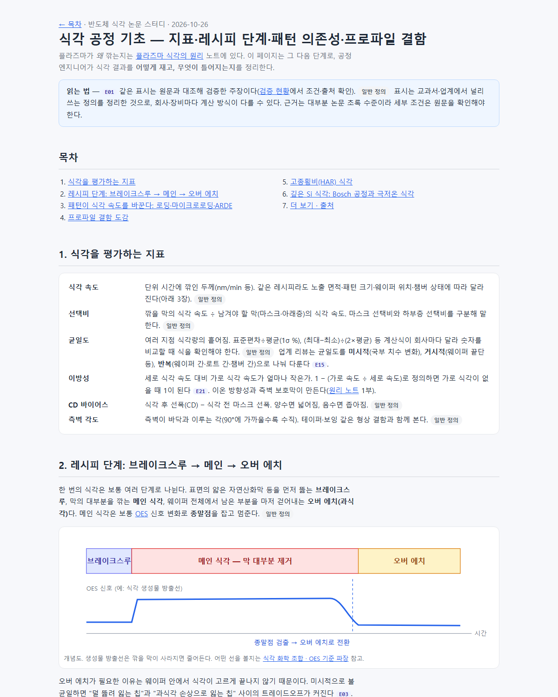
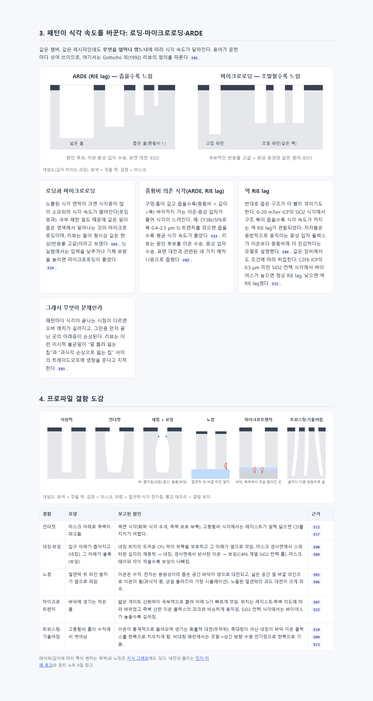
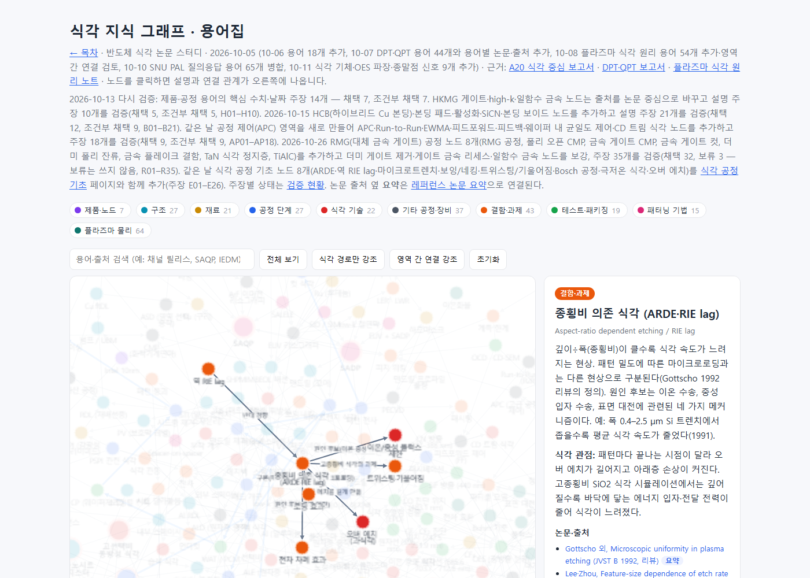

#61
식각 공정 기초 보충 — 지표·패턴 의존성·프로파일 결함 페이지
지시 (원문)
완료되면, 식각 공정에 대한 기초 내용 보충할 거 있으면 해줘. 그리고 web에서 전체 구성 개선할 것 있는지도 검토해줘.
(#60 작업 중에 받은 지시다. 두 번째 문장인 사이트 전체 구성 검토는 별도 항목으로 기록한다(SRAM 지시가 먼저 들어와 #62가 SRAM, 구성 검토는 그 뒤 항목).)
분석 (Claude의 정리)
- 기초 원리 쪽에는 Lieberman 교과서 노트(플라즈마 물리 중심, 49절)와 질의응답 해설이 있다. 사이트와 그래프를 검색해 보니, 공정 엔지니어가 결과를 재고 문제를 진단할 때 쓰는 기초가 거의 없었다.
- ARDE·RIE lag, 마이크로트렌치, 트위스팅: 0건.
- 보잉·Bosch·극저온 식각: 다른 노드 설명에 한두 번 언급되는 정도.
- 식각 지표의 정의, 레시피 단계 구조: 정리된 곳이 없음.
- 보충할 것: 식각 지표 정의, 레시피 단계(브레이크스루 → 메인 → 오버 에치), 로딩·마이크로로딩·ARDE·역 RIE lag, 프로파일 결함(언더컷·네킹·보잉·노칭·마이크로트렌치·트위스팅), 고종횡비 식각, Bosch·극저온 식각.
과정
- 기존 내용을 점검했다. 그래프 노드 274개와 원리 노트 49절에서 위 용어를 검색했다.
- 자문.
- astra(high, 백그라운드): 위 7개 주제의 출처와 근거 범위를 물었다.
- jev
- 형태: "새 학습 페이지를 기초 원리 섹션에 만들고 핵심 용어는 그래프 노드로도 추가"(1.0).
- 순서: "기초 보충 먼저, 그 다음 구성 검토"(0.89).
- 구성 검토의 기록 단계: "11단계에 이어 붙임"(0.89).
- 기초 보충의 기록 단계: 판단이 거의 갈렸다(16단계 0.44, 8단계·새 단계 각 0.28, 신뢰도 0.16). 16단계는 'RMG 공정 리서치'라 내용과 맞지 않아, 새 17단계를 만들었다. jev의 최다 답을 따르지 않은 판단이다.
- OpenAlex로 피인용이 많은 고전 문헌을 찾아 초록을 읽었다.
- ARDE: Gottscho 1992. 역 RIE lag: Doemling 1996.
- 노칭: Kinoshita 1996, Hwang·Giapis 1997. 마이크로트렌치: Dalton 1993.
- 네킹·보잉: Lee 2010, Miyake 2009. 트위스팅: Wang·Kushner 2010.
- HAR 식각: Huang 2019·2020. 극저온 식각: Tachi 1988.
- 균일도 구분: Lee·Kanarik·Gottscho 2014.
- 장부
ledger/etch_basics.json(비공개)에 1차 주장 15개(E01–E15)를 적었다. lint 오류 0, DOI 12개 실재. 검증자 3개의 결과는 채택 12, 조건부 3이었다.- E04: 초록에 없는 '주로'·해석이 섞였다는 지적을 받았다.
- E07: 이온 산란과 홈의 인과를 원문보다 강하게 썼다(원문은 상관)는 지적을 받았다.
- E08: 보잉의 다른 요인과 발생 시점이 빠졌다는 지적을 받았다.
- 깊은 Si 식각 주장 3개(E16–E18)를 넣었다: Bosch 특허 원문, 극저온 식각 리뷰, Bosch·극저온 메타렌즈 비교.
- E16: 검증자가 독립 출처 2곳을 더 찾아 채택됐다.
- E18: 원문 결론("거칠기는 어느 정도 허용, 효율 적정")을 빠뜨려 부정적 뉘앙스가 됐다는 지적을 받았다. 고친 뒤 채택됐다.
- astra 결과를 받아 주장 8개(E19–E26)를 추가했다: 균일도 식, 레시피 단계, 이방성 정의, 바이어스에 따른 정상·역 lag 전환, 정상 RIE lag 예, 마이크로로딩 실험, Bosch 스캘럽, HAR 리뷰.
- Donnelly·Kornblit 리뷰 본문을 근거로 한 2개(E19 균일도 식, E20 레시피 단계)는 검증자가 본문을 열지 못해 보류됐다. 작성자가 받은 PDF 문장을 넘기면 독립 검증이 아니게 되므로 넘기지 않았다. 페이지에서는 이 두 내용을 '일반 정의'로만 표시했다.
- E25: 스캘럽 경향의 실험 근거가 Bosch가 아니라 STiGer 실험이라는 지적을 받았다. 조건부로 남기고, 페이지 문장에 그 조건을 그대로 적었다.
- E26: 논문 성격(원자 수준 공정 리뷰의 한 절)과 위치 표기를 고쳐 채택됐다.
- 최종 gate: 주장 26개 — 채택 23, 조건부 1, 보류 2.
- 새 페이지
research/etch_process_basics.html를 썼다.- 7개 장과 그림 4개(레시피 단계·종말점, ARDE와 마이크로로딩, 프로파일 결함 6종 단면, Bosch와 극저온 비교)로 구성했다.
- 각 문장 옆에 주장 ID를 달아 검증 현황으로 연결했다. 검증되지 않은 일반 정의에는 '일반 정의' 표시를 붙였다.
- 렌더링 확인 중 그림 5개에서 마스크 개구부가 회색으로 남은 것을 고쳤다.
- 주장 범위를 넘는 문장 2개를 지웠다. 하나는 역 lag의 증착 해석이고, 다른 하나는 E03에 없는 비용 이야기다.
- 그 밖의 반영.
- 인용 논문·특허 21편의 요약을 썼다. 검증 결과 18편은 바로 채택됐고, 조건이 빠진 3편(Tachi·Baracu·Westerheim)은 조건을 넣어 재검증한 뒤 채택됐다.
- 그래프에 노드 8개를 추가했다: ARDE, 역 RIE lag, 마이크로트렌치, 보잉·네킹, 트위스팅·기울어짐, Bosch 공정, 극저온 식각, 오버 에치.
- 로딩 효과·노칭 노드를 보강하고 관계 16개를 추가했다.
- 목차의 기초 원리 섹션과 학습 경로 1단계("플라즈마 원리 · 식각 기초")에 페이지를 넣었다. 검증 현황에는 "식각 공정 기초" 묶음을 새로 만들었다.
- build 결과: 그래프 노드 282개·관계 609개, 논문 요약 166편, 검증 현황 356개(채택 287·조건부 63·보류 6).
--check, 링크(35쪽 0건), 요약 연결, OES 그래프 검사 모두 통과. - 커밋·푸시. GitHub Actions
site-check와 Pages 배포가 모두 성공했다.<계정>.github.io/etch-paper-study/에서 식각 공정 기초 페이지, 17단계 기록, 검증 현황, 목차가 200이고 목차에 새 페이지 링크가 있음을 확인했다.
결과 / 증거
성공 플라즈마 물리 노트와 공정 리서치 사이를 잇는 식각 공정 기초 페이지를 만들었다. 다음을 근거와 함께 한 곳에 모았다.
- 식각을 어떻게 재는가: 지표.
- 왜 패턴마다 다르게 깎이는가: 로딩, 마이크로로딩, ARDE, 역 lag.
- 어떤 모양으로 틀어지는가: 프로파일 결함 도감.
- 깊게 팔 때의 과제: 고종횡비 식각, Bosch·극저온 식각.
남은 한계
- 근거는 대부분 초록 수준이다.
- 균일도 계산식과 레시피 단계 구조는 공개 원문 근거를 독립 검증하지 못해 '일반 정의'로만 실었다.
- 푸팅은 문헌마다 뜻이 달라(노칭과 같은 뜻으로 쓰는 예가 있음) 별도 결함으로 넣지 않았다.
식각 공정 기초 열기 → · 그래프 ARDE 노드 → · 검증 현황(E01–E26)
페이지 첫 화면(지표·레시피 단계):

3장 패턴 의존성과 4장 프로파일 결함 도감(캡처용 사본에서 두 장만 표시):

그래프의 새 ARDE 노드:
